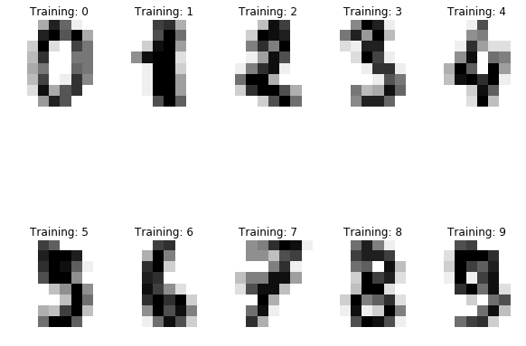

CAS CS 440/660 Artificial Intelligence - Spring 2017
This assignment is due on Friday, February 24, at 00:00 EST (i.e. the night
from Friday to Saturday). You are encouraged to work in teams of two to four
students. Each student must submit code along with the report.
Programming Assignment 1
In this assignment, you will build upon the ideas you learned in class and in
the labs. Your team will design
and implement a simple neural network and train it on 3 different datasets.
Each team must write a webpage report on the assignment. Use, for example,
the provided template as a starting point and make sure to answer all questions asked below. To ensure that each team member builds his or her own
electronic portfolio, we ask that everybody submit his or her own report.
Learning Objectives
- Understand how neural networks work.
- Implement a logistic regression classifier, and a neural network classifier.
- Understand the role of different parameters of a neural network, such
as learning rate.
- Learn how to evaluate a classifier using metrics like classification accuracy and confusion matrices.
Logistic Regression
- Using the skeleton code provided in LogisticRegression.py, implement a logistic regression classifier. You will have to implement 3
functions: compute_cost(), predict() and fit(). Train this model using
the dataset 'Linear' and visualize the decision
boundary learned by your model. (10 pts)
- Now, train your logistic regression classifier using the dataset 'NonLinear' and visualize the decision boundary learned by your
model. Can your logistic regression classifier learn non-linear decision
boundaries? Why or why not? (10 pts)
Neural Networks
- Implement a neural network class with 1 hidden layer in a separate NeuralNet.py file. Train this model
using the dataset 'Linear' and visualize the
decision boundary learned by your model. Then, train your neural network
model using the dataset 'NonLinear' and visualize the
decision boundary learned by your model. Can your neural network
model (with one hidden layer) learn non-linear decision boundaries? Why
or why not? (20 pts)
- What effect does learning rate have on how your neural network is
trained? Illustrate your answer by training your model using different
learning rates. Provide plots illustrating the total cost of your model over time for different settings of the learning rate. (10 pts)
- What effect does the number of nodes in the hidden layer have on how
your neural network is trained? Illustrate your answer by training your
model using different numbers of hidden layer nodes. Provide plots showing the decision boundaries learned by your model for different settings of the number of nodes in the hidden layer. (10 pts)
Digit Classification
The digits dataset consists of images of the digits (0-9). Each sample is an 8 pixel by 8 pixel image (visualized below). The dataset consists of 4 files:
- X_train.csv: An array of images (where each row represents an 8x8 image flattened into a 64-d vector).
- y_train.csv: An array of ground truth labels (0-9) corresponding to X_train.
- X_test.csv: An array of images (where each row represents an 8x8 image flattened into a 64-d vector).
- y_test.csv: An array of ground truth labels (0-9) corresponding to X_test.

- Train your Logistic Regression Classifier to classify digits using the files X_train and y_train. Evaluate the classifier performance on the test set (X_test) by computing the average classification accuracy along with a confusion matrix. (20 pts)
- Train your Neural Network to classify digits using the files X_train and y_train. Evaluate the classifier performance on the test set (X_test) by computing the average classification accuracy along with a confusion matrix. Compare the performance of your neural network classifier with your logistic regression classifier. (20 pts)
Submission
The programming assignment, along with the webpage report, should be made into a
.zip file and submitted using gsubmit.